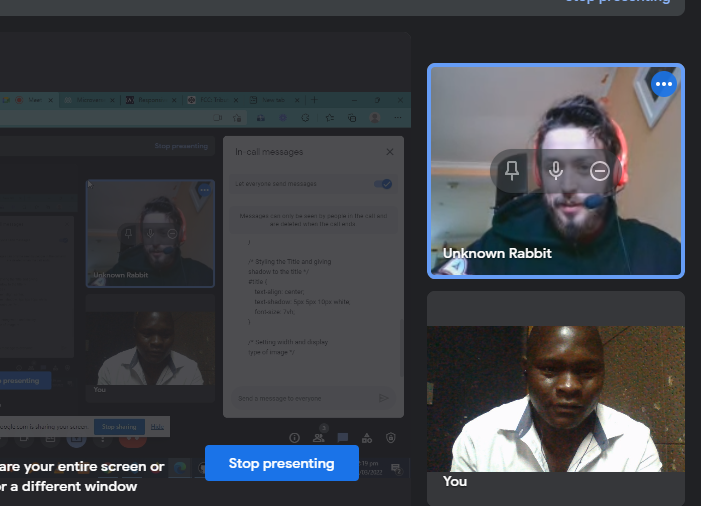

Ernest Kell Tribute page

Kell, up right, and Ernest, down. This is a screenshot taken during microverse collaborative coding challenges
Here's a time line of Dr. Ernest Kell's life:
- 1990Born in Blantyre, Malawi
- 2008 - Leaves his family to attend the University of Malawi, where he graduated with a bachelor's degree in Computer science four years after.
- 2013 - He Joined a small company that creates software programs related to health where he worked as an intern in the IT department for one year and three months.
- 2015 joined On-it software Solutions, another IT company that provides software solutions to companies.
- 2020 - Married wife of 20 years, Ellen James. Gets laid off due corona Virus in 2021.
- 2021 - Inspired by Elon Musk, he started a small organisation called Young Coders Initiative (YCI) that aims at teaching children how to use a computer for solving different problems by using software products.
- 2021 - Receives a Masters Degree in Computer science.
- 2019 - Went to UK to meet Kell, his friend.
- 2019 - Praised for his good work
- 2020 - Helped many Malawian children to become computer literate.
PictureMr Ernest Lasten was very hard working and a good collaborator
-- Kell McWatt